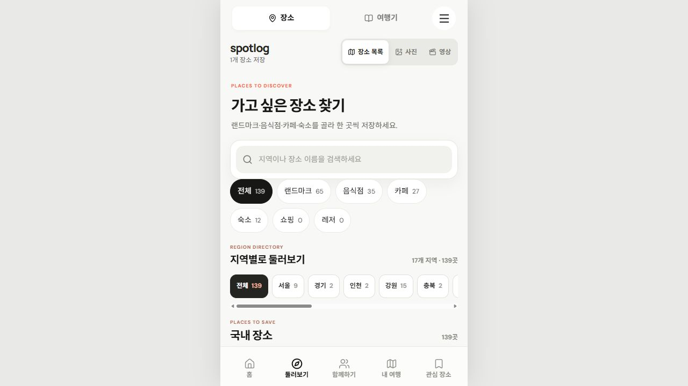
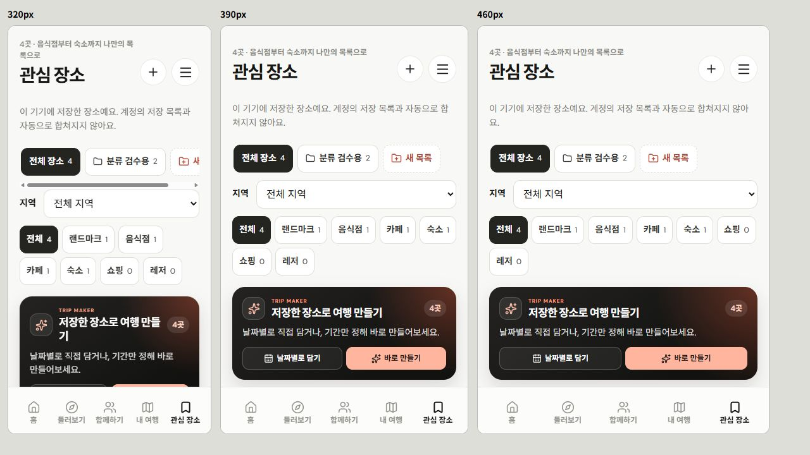

둘러보기·관심 장소 분류 보완
2026-10-29 · 로컬 반영 · Git 업로드/배포 없음
분류 기준
장소는 상위 개념. 랜드마크 / 음식점 / 카페 / 숙소 / 쇼핑 / 레저로 구분. 기존 Place.kind와 placeId 유지. 음식점·카페·숙소도 랜드마크 없이 단독 저장 가능. 별도 종류별 저장소나 자동 폴더 생성 없음.
변경
- 하단 둘러보기 → 장소 목록 우선. 상단 장소/여행기 전환 유지.
- 종류 선택과 개수 표시. 선택 지역·검색어 안의 종류별 개수 계산. 0곳 종류도 표시.
- 홈에서 고른 종류 → 해당 종류 더 보기. 명시적인 새 탐색은 이전 지역·검색어 초기화.
- 종류별 주소 지원: #places-guide-food / cafe / stay 등. 새로고침·뒤로가기에서 종류 복원.
- 관심 장소의 종류 드롭다운 → 바로 보이는 종류 버튼. 선택한 내 목록＋지역 안에서 개수 계산.
- 저장 카드에 종류 배지 추가. 음식점/쇼핑 명칭 통일.
- 사진·영상 유지. 사진 보기는 기존 랜드마크 사진 범위를 표시. 영상은 공개 미디어가 있는 장소 사용.
- 사진·영상 위 전체 메뉴의 흰 배경/흰 아이콘 충돌 수정.
검수
- 기존 관련 검사 36개 통과: 관심 목록, 저장 여행 초안·구성, 사진 탐색·권리, 폰트.
- 웹 타입 검사·웹 빌드·네이티브 타입 검사 통과.
- 별도 로컬 origin 5214에서 실제 음식점·카페·숙소 저장 → 종류별 1곳씩 표시 → 새로고침 후 보존 확인. 기존 사용자의 5210 저장 목록은 검수용으로 수정하지 않음.
- 검수용 목록의 제주 랜드마크＋부산 카페 → 부산 필터에서 전체1/랜드마크0/카페1. 원본 전체 저장4곳 유지.
- 0곳 종류 선택·전체 복귀, 홈 카페/음식점 이어받기, 새 탐색 검색 초기화, 종류 URL 새로고침, 사진↔목록의 종류·지역 유지 확인.
- 320/390/460px iframe 화면 확인. 실기기 터치 검수는 별도.
- 검수 탭 콘솔 오류·경고0, 로딩 완료 이미지 깨짐0. 종류 버튼 14px / 높이45.8px, 가로 넘침 없음.
화면
둘러보기 · 관심 장소


범위
고객 UI 5개 파일 수정: App.tsx / data.ts / app-navigation.css / InterestCollections.tsx / interest-collections.css. 저장 원본·여행 일정·관리자·서버 계약 변경 없음. 실제 서버·OAuth·AI·지도 연결 상태는 기존과 같음.